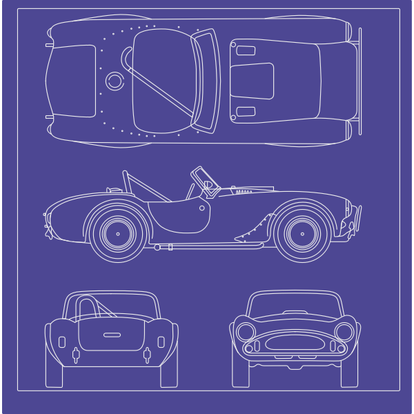

MotorScan Global AI 🌐
Sistema de Diagnóstico Acústico

Iniciando análise...
INICIAR PASSEIO TÉCNICO
Análise concluída
Nenhuma anomalia crítica detectada. Os padrões acústicos estão dentro dos parâmetros nominais.
↺ NOVA ANÁLISE